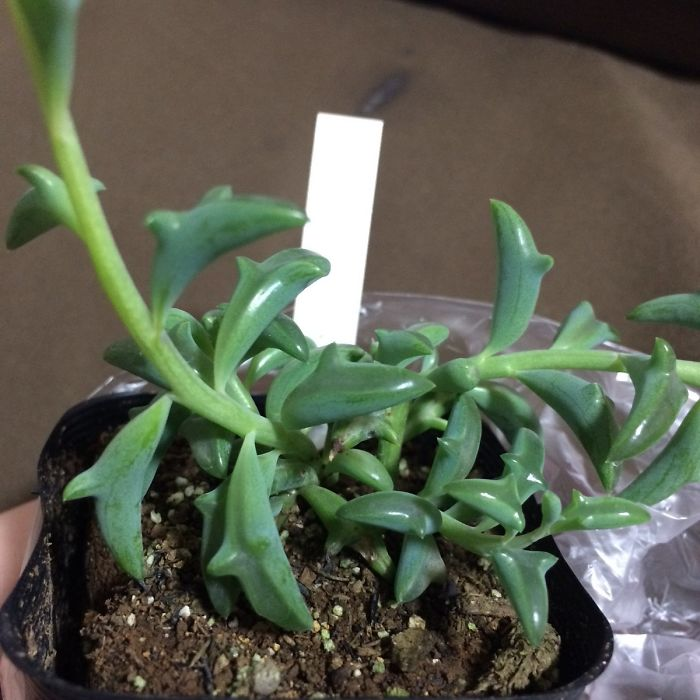
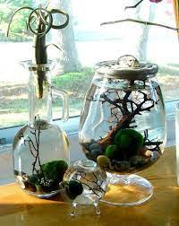
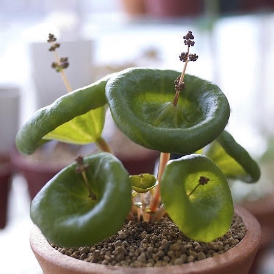
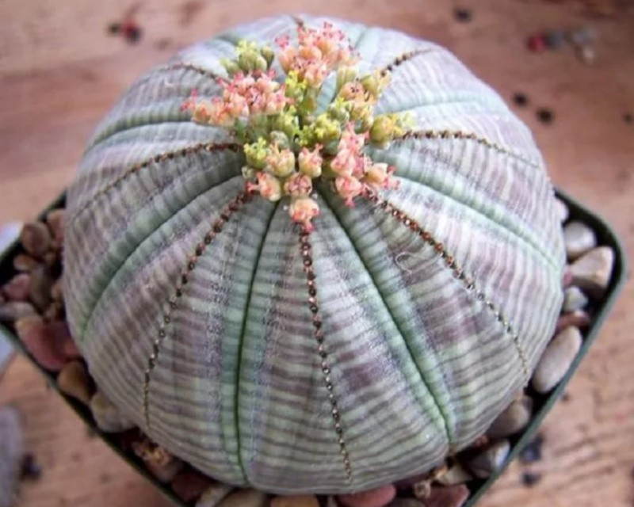

Сегодня фиалками, кактусами, рододендроном и прочей красотой никого не удивишь. Эти растения можно увидеть на подоконниках квартир и офисах. Но в царстве флоры еще достаточно чудесных растений, которые выглядят, как пришельцы с другой планеты. Они неприхотливы и при этом невероятны!
|  |  | |
 |  |
|---|---|---|---|---|
| Суккуленты-дельфины (Senecio peregrinus) | Японский мох маримо (Marimo moss balls) | Неприхотливая трахиандра (Trahyandra) | Крассула умбелла (Crassula umbella) | Молочай тучный (Euphorbia obesa) |
| Научное название растения с листьями , которые напоминают дельфинов - крестовик перегринус. | Зеленый шарик водоросли в японских семьях принято передавать по наследству, потому что приносит благополучие и удачу в дом. | Африканское чудо напоминает кудри волос, растущие снизу вверх. | Красивое и необычное растение, которое сотворила приррода. | Экзотическое зеленоватое растение очень часто путают с кактусом, хотя колючек у него нет. |
| Нет аллергии | Нет аллергии | Может быть аллергия | Нет аллергии | |